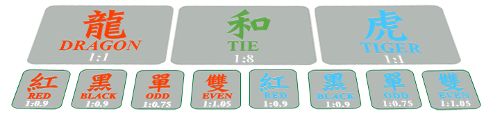

<div id="pok-index">
  <ik-header show-time="true"></ik-header>
  <!--<ik-select title="{{'LIMIT' | translate}}" source="['40 - 1600', '45 - 1800', '125 - 5000', '160 - 6400']"></ik-select>-->

  <ik-chip></ik-chip>

  <ik-action-group></ik-action-group>

  <ik-way></ik-way>

  <section class="game-box" style="padding-top: 45px" ng-style="{height: winHeight + 'px',width: winWidth + 'px'}">

    <div class="desktop-back">
      
    </div>
  </section>

</div>